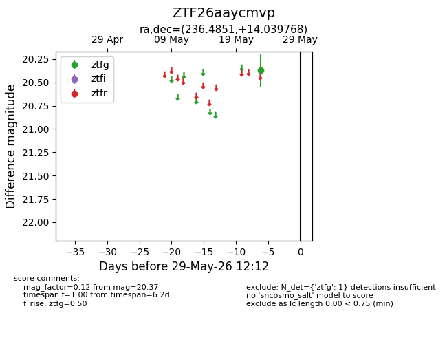
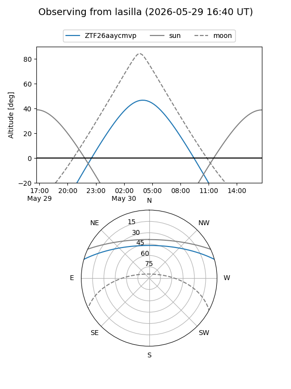
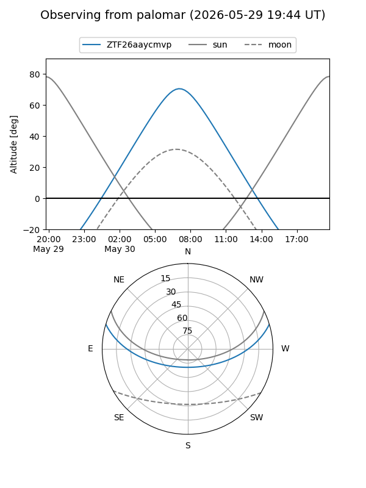

ZTF26aaycmvp
Target ZTF26aaycmvp at 2026-05-29 12:16
Aliases and brokers:
lsst-FINK: link
lsst-Lasair: link
lsst-ALeRCE: link
ztf-FINK: link
ztf-Lasair: link
ztf-ALeRCE: link
alt names
ZTF26aaycmvp (ztf,fink_ztf)
Coordinates:
equatorial (ra, dec) = 236.4851,+14.03977
equatorial (HMS+DMS) = 15:45:56.42,+14:02:23.17
galactic (l, b) = (24.0747,+47.35833)
Flags:
Photometry:
last ztfg=20.37
1 ztfg detections
Lightcurve

Visibility


Additional plots